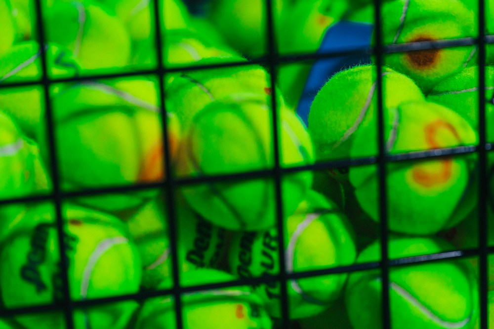
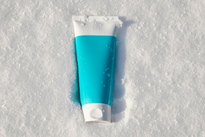
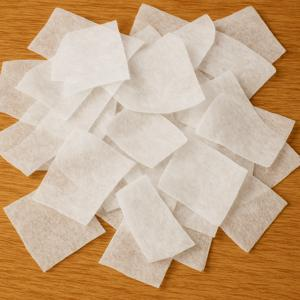

Quick Life Hacks Hub
Unexpected tricks you’ll wish you knew sooner!
 Banana Peel for Splinters:
Banana Peel for Splinters:
Tape the inside of a banana peel over a splinter overnight—the enzymes help draw it out like magic.
Aluminum Foil to Sharpen Scissors:
Snip through folded aluminum foil 8–10 times to bring dull scissors back to life.

Tennis Ball for Jar Opening:
Cut a tennis ball in half and use the inside as a grippy, palm-friendly jar opener.

Toothpaste on Headlights:
Rub non-gel toothpaste on foggy headlights, scrub with a sponge, rinse—and boom, instant clarity.

Dryer Sheet in Stinky Shoes:
Pop a dryer sheet in each shoe overnight to banish odor (bonus: smells like fresh laundry feet).
Ad Placeholder (Imagine an AdSense ad here!)